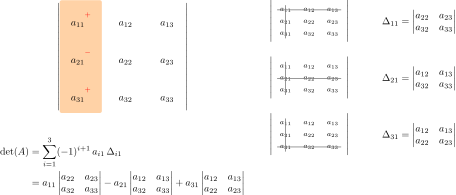

4 Déterminants
Dans ce chapitre, une matrice \(A \in \mathcal{M}_{n}(\mathbb{K})\) est représentée par ses colonnes \((C_{1},\dots,C_{n})\).
Introduction
Le déterminant est un outil permettant d’étudier les matrices, notamment leur inversibilité. Malheureusement, les démonstrations de son existence et de ses propriétés nécessitent quelques notions de théorie des groupes qui dépassent le cadre de ce cours. Seul le cas \(n=2\), accessible “à la main”, sera traité entièrement ; il contient déja beaucoup d’idées intéressantes.
Dans ce cours, le déterminant est défini à l’aide de ses propriétés vis à vis des lignes et des colonnes. Ainsi, même sans disposer d’une formule générale, on sera en mesure de calculer des déterminants, ce qui est l’objectif en TSI.
4.1 Déterminant d’une matrice carrée
4.1.1 Définition
Définition 4.1 (Déterminant d’une matrice carrée) Il existe une unique application \(\det :\mathcal{M}_{n}(\mathbb{K}) \to \mathbb{K}\), appelée déterminant, telle que :
le déterminant est linéaire par rapport à chaque colonne i.e. pour tout \(i \in \{1,\dots,n\}\), l’application \(C_{i} \mapsto \det(C_{1},\dots,C_i,\dots,C_{n})\) est linéaire,
échanger deux colonnes multiplie le déterminant par \(-1\) i.e. pour tout \(i <j\),
\[ \det(C_{1},\dots,C_{i},\dots,C_{j},\dots,C_{n}) = - \det(C_{1},\dots,C_{j},\dots,C_{i},\dots,C_{n}), \]
\(\det(I_{n})=1\).
Le déterminant d’une matrice \(A = (a_{ij})_{1 \leqslant i,j \leqslant n}\) est aussi noté à l’aide de barres verticales
\[ \det A = \left|\begin{matrix} a_{11}& \dots & a_{1n}\\ \vdots&&\vdots\\ a_{n1}& \dots &a_{nn} \end{matrix}\right| \]
Si deux colonnes de \(A\) sont égales, la deuxième propriété montre que le déterminant est nul, car égal à son opposé.
Plus généralement, si par exemple \(C_{1}\) est combinaison linéaire de \(C_{2}, \dots, C_{n}\), alors \(\det A = 0\). En effet, en écrivant
\[ C_{1} = \lambda_{2} C_{2} + \dots + \lambda_{n} C_{n} \]
on obtient par linéarité par rapport à la première colonne
\[ \det A = \sum_{i=2}^{n} \lambda_{i}\det (C_{i},C_{2},\dots,C_{n}), \]
mais chacun des déterminants de cette somme est nul car deux colonnes sont identiques.
Le déterminant d’une matrice de rang non maximal est donc nécessairement nul. On verra que la réciproque est vraie, de sorte que le déterminant permet exactement de tester l’inversibilité d’une matrice.
Il est important de noter que le déterminant n’est pas une application linéaire (on dit que c’est une application multilinéaire). Par exemple, la multilinéarité (par rapport à chaque colonnes) donne :
\[ \forall A \in \mathcal{M}_{n}(\mathbb{K}),\ \forall \lambda \in \mathbb{K},\ \det (\lambda A) = \lambda^{n}\det A. \]
Dans le même ordre d’idée, il n’existe pas de formule simple donnant \(\det (A+B)\) en fonction de \(\det A\) et \(\det B\)…
4.1.2 Propriétés
On liste maintenant les propriété fondamentales du déterminant.
Proposition 4.1 (Déterminant d’une matrice de taille \(2\)) Si \(A = \begin{pmatrix} a&b\\c&d \end{pmatrix} \in \mathcal{M}_{2}(\mathbb{K})\), alors
\[ \det A = ad-bc. \]
Pour une matrice carrée de taille \(2\), la formule précédente permet de vérifier facilement que le déterminant de \(A\) est égal au déterminant de \(A^{T}\). C’est un fait général :
Proposition 4.2 (Déterminant et transposition) Pour tout \(A \in \mathcal{M}_{n}(\mathbb{K})\), \(\det A = \det A^{T}\)
Le déterminant jouit des mêmes propriétés vis à vis des lignes que des colonnes ; échanger deux lignes change le déterminant en son opposé, etc.
Proposition 4.3 (Déterminant d’un produit) Pour tout \(A,B \in \mathcal{M}_{n}(\mathbb{K})\), \(\det(AB) = \det A \det B\).
Proposition 4.4 (Determinant et inversibilité) Une matrice \(A \in \mathcal{M}_{n}(\mathbb{K})\) est inversible ssi \(\det A \neq 0\).
4.1.3 Calcul pratique d’un déterminant
Il existe une formule explicite pour le déterminant d’une matrice carrée de taille quelconque qui généralise celle donnée pour une matrice de taille \(2\). Si cette formule a un intérêt théorique, elle est en revanche inutile lorsqu’il s’agit de calculer un déterminant.
En pratique, on utilise le développement par rapport à une ligne ou une colonne, précédé d’opérations sur les lignes et les colonnes bien choisies.
Proposition 4.5 (Développement par rapport à une ligne ou une colonne) Soit \(A = (a_{ij})_{1\leqslant i,j\leqslant n}\in \mathcal{M}_{n}(\mathbb{K})\) avec \(n\geqslant 2\). Pour tout \(i,j\in\{1,\dots,n\}\), on note \(\Delta_{ij}\) le déterminant de la matrice obtenue à partir de \(A\) en rayant la ligne \(i\) et la colonne \(j\). Alors, pour tout \(i\in\{1,\dots,n\}\),
\[ \det A = \sum_{j=1}^n(-1)^{i+j}a_{ij}\Delta_{ij} \quad \text{(développement par rapport à la ligne $i$)} \]
et, pour tout \(j \in \{1,\dots,n\}\),
\[ \det A = \sum_{i=1}^{n}(-1)^{i+j} a_{ij}\Delta_{ij} \quad \text{(développement par rapport à la colonne $j$.)} \]
Une utilisation naive de ce résultat permet de calculer de proche en proche des déterminants de matrices de taille quelconque à partir de la formule pour une matrice de taille \(2\). La figure suivante illustre un développement suivant la première colonne pour une matrice de taille \(3\).

Exemple 4.1 Calcul du déterminant de la matrice \(A = \begin{pmatrix} -2&2&-3\\ -1&1&3\\ 4&0&-1 \end{pmatrix}\).
En développant par rapport à la première colonne, on obtient
\[ \begin{aligned} \det A &= (-2)\left|\begin{matrix}1&3\\0&-1\end{matrix}\right| - (-1)\left|\begin{matrix}2&-3\\0&1\end{matrix}\right| + 4 \left|\begin{matrix}2&-3\\1&3\end{matrix}\right|\\ &= (-2)\cdot(-1) + (-2) + 4 \cdot 9\\ &= 36. \end{aligned} \]
Noter que le développement par rapport à la deuxième colonne est bien plus judicieux car il y a un zéro sur cette colonne. On obtient
\[ \begin{aligned} \det A &= -2 \left|\begin{matrix}-1&3\\4&-1\end{matrix}\right| + 1 \left|\begin{matrix}-2&-3\\4&-1\end{matrix}\right|\\ &= -2 \cdot (-11) + (2+12)\\ &= 36. \end{aligned} \]
Le calcul précédent montre que l’on a tout intérêt à utiliser une ligne ou une colonne avec beaucoup de \(0\) lors du calcul d’un déterminant. Si ce n’est pas le cas, on peut toujours en faire apparaitre à l’aide de la proposition suivante :
Proposition 4.6 (Déterminants et opérations élémentaires) Il y a trois opérations élémentaires sur les lignes et les colonnes d’une matrice (données ici dans le cas des colonnes) :
| Opérations | Effet sur le déterminant |
|---|---|
| \(C_i \leftrightarrow C_j\quad (i\neq j)\) | Multiplié par \(-1\) |
| \(C_{i} \gets C_i + \lambda C_{j}, \quad i \neq j,\quad \lambda \in \mathbb{K}\) | Inchangé |
| \(C_{i} \gets \lambda C_{i},\quad \lambda \neq 0\) | Multiplié par \(\lambda \neq 0\) |
On notera le corollaire suivant :
On ne change pas un déterminant en ajoutant à une ligne (ou une colonne) une combinaison linéaire des autres lignes (ou colonnes).
Exemple 4.2 On revient sur l’exemple de la matrice \(A = \begin{pmatrix} -2&2&-3\\ -1&1&3\\ 4&0&-1 \end{pmatrix}\). En effectuant l’opération élémentaire \(L_1 \gets L_1 - 2L_{2}\), on a
\[ \det A = \left|\begin{matrix}0&0&-9\\-1&1&3\\4&0&-1\end{matrix}\right| \]
En développant par rapport à la première ligne, on obtient alors
\[ \det A = -9 \left|\begin{matrix}-1&1\\4&0\end{matrix}\right| = 36. \]
Pour minimiser les erreurs de calcul, on aura toujours intérêt à faire apparaitre le plus de \(0\) possible sur une ligne (ou une colonne) avant de développer par rapport à cette ligne (ou cette colonne).
Le développement par rapport à une ligne (ou une colonne) est aussi un outil très puissant pour établir des relations de récurrence entre déterminants.
A titre d’exemple, on calcul le déterminants des matrices triangulaires (qui incluent les matrices diagonales) :
Proposition 4.7 (Déterminant d’une matrice triangulaire) Si \(A\) est une matrice triangulaire (inférieure ou supérieure), alors son déterminant est égal au produit de ses termes diagonaux.
On a un résultat analogue pour les matrices triangulaires par blocs :
Proposition 4.8 (Déterminant d’une matrice triangulaire par blocs) Si \(A\) est une matrice triangulaire par blocs, alors le déterminant de \(A\) est égal au produit des déterminants des blocs diagonaux de \(A\).
Exemple 4.3 Si \(A = \begin{pmatrix} \boldsymbol{A_{11}}&\boldsymbol{A_{12}}\\ \boldsymbol{0}&\boldsymbol{A_{22}} \end{pmatrix}\) alors \(\det A = \det \boldsymbol{A_{11}} \det \boldsymbol{A_{22}}\).
Une autre stratégie pour calculer un déterminant est donc de se ramener par opérations élémentaires à une matrice triangulaire (algorithme de Gauss), puis d’utiliser le résultat précédent. C’est cette approche qui est utilisée en pratique pour calculer numériquement les déterminants.
On ne peut pas développer naivement un déterminant de taille \(n\) de proche en proche. En effet, le premier développement fait apparaitre \(n\) déterminants de taille \(n-1\), qui font eux même apparaitre \(n-1\) déterminants de taille \(n-2\) etc. menant à une complexité fatorielle qui dépasse les capacités de n’importe quel ordinateur, même pour de “petites” valeurs de \(n\).